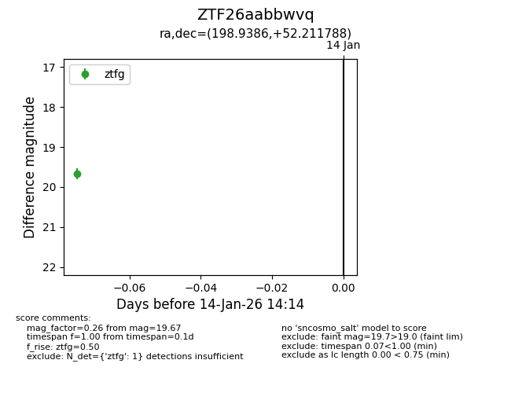
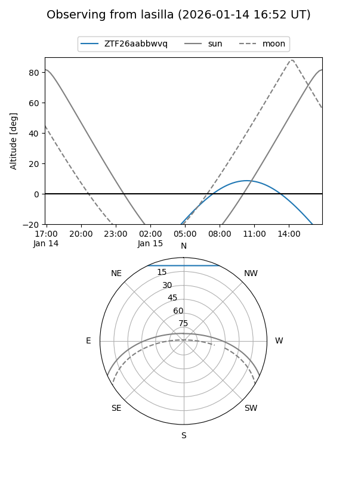
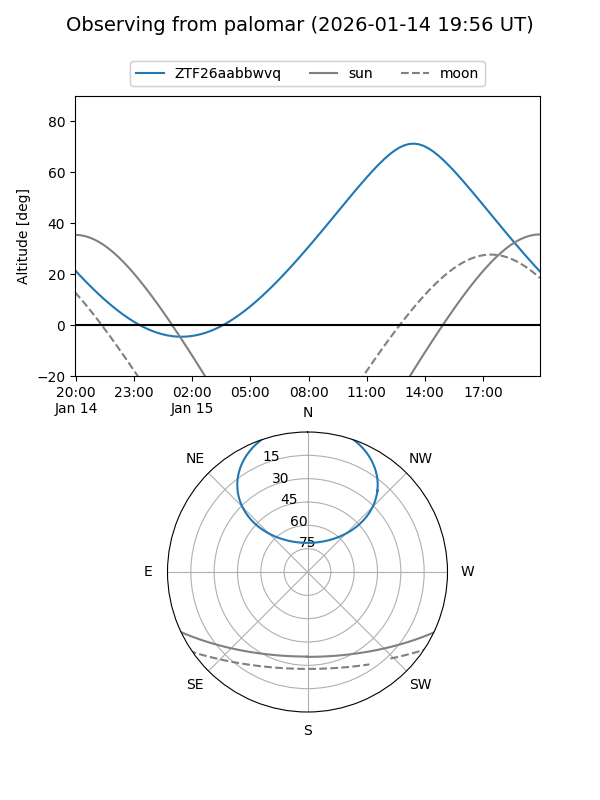

ZTF26aabbwvq
Target ZTF26aabbwvq at 2026-01-14 14:15
Aliases and brokers:
FINK: link
Lasair: link
ALeRCE: link
alt names
ZTF26aabbwvq (ztf,fink_ztf)
Coordinates:
equatorial (ra, dec) = 198.9386,+52.21179
equatorial (HMS+DMS) = 13:15:45.26,+52:12:42.44
galactic (l, b) = (114.2611,+64.50516)
Flags:
Photometry:
last ztfg=19.67
1 ztfg detections
Lightcurve

Visibility


Additional plots